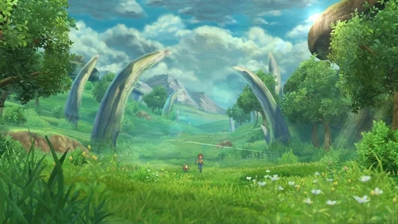
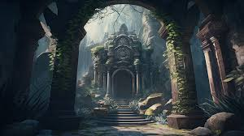

Lara, uma jovem aventureira, encontra um mapa antigo indicando a localização de um tesouro lendário.
Lara entra em uma floresta misteriosa.
Lara fica onde está, e a história termina.
Lara encontra um ancião que oferece ajuda.
Lara cai em uma armadilha de caça.
Lara chega a uma bifurcação.

Lara encontra uma caverna com símbolos antigos.
Dentro da caverna ou no vale, Lara enfrenta um enigma mágico.
Lara precisa atravessar uma ponte instável.
Lara encontra um guardião protegendo o tesouro.
Lara vence o guardião com dificuldade e pega o tesouro.
Lara convence o guardião de suas intenções nobres e recebe o tesouro.
Lara retorna como heroína ou protege o segredo do tesouro. Seu destino é moldado por suas escolhas!
Fim da aventura.